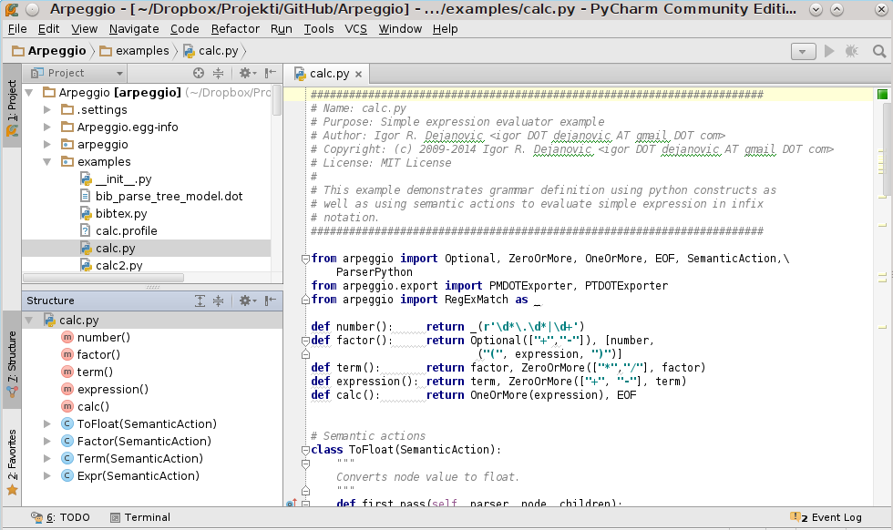
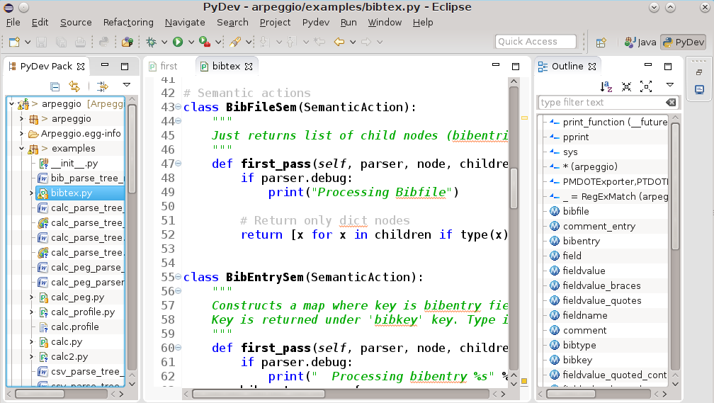

Kreirano 2022-10-17 Mon 12:17, pritisni ESC za mapu, m za meni, Ctrl+Shift+F za pretragu
>>> import this
Beautiful is better than ugly.
Explicit is better than implicit.
Simple is better than complex.
Complex is better than complicated.
Flat is better than nested.
Sparse is better than dense.
Readability counts.
Special cases aren't special enough to break the rules.
Although practicality beats purity.
Errors should never pass silently.
Unless explicitly silenced.
In the face of ambiguity, refuse the temptation to guess.
There should be one-- and preferably only one --obvious way to do it.
Although that way may not be obvious at first unless you're Dutch.
Now is better than never.
Although never is often better than *right* now.
If the implementation is hard to explain, it's a bad idea.
If the implementation is easy to explain, it may be a good idea.
Namespaces are one honking great idea -- let's do more of those!
$ python
Python 3.4.1 (default, May 19 2014, 17:23:49)
[GCC 4.9.0 20140507 (prerelease)] on linux
Type "help", "copyright", "credits" or "license" for more information.
>>> print("Hello World!")
Hello World!
>>> 23423432 ** 34
36992864259838982449973046100677855738848171498810334668814347544
72272789093305975943853887303038138168893642829742372685558166974
99603306904629343154070096117901999442230973428786292674630445031
96766248000024671594323356975802355740978014370737946624
>>>
principal = 1000 # Početni iznos
rate = 0.05 # Kamatna stopa
numyears = 5
year = 1
while year <= numyears:
principal = principal * (1 + rate)
print(year, principal)
year += 1
print i formatiranje izlazaprintf funkciji u C-u.%)print("%3d %0.2f" % (year, principal))
Ili upotrebom format funkcije
print(format(year,"3d"),format(principal,"0.2f"))
# ili format funkcijom nad stringom
print("{0:3d} {1:0.2f}".format(year,principal))
ili upotrebom f-stringova
print(f"{year:3d} {principal:0.2f}")
if a < b:
print("Computer says Yes")
else:
print("Computer says No")
if product == "game" and type == "pirate memory" \
and not (age < 4 or age > 8):
print("I'll take it!")
if suffix == ".htm":
content = "text/html"
elif suffix == ".jpg":
content = "image/jpeg"
elif suffix == ".png":
content = "image/png"
else:
raise RuntimeError(
"Unknown content type")
if 'spam' in s:
has_spam = True
else:
has_spam = False
f = open("foo.txt")
line = f.readline()
while line:
print(line,end='')
line = f.readline()
f.close()
Isti program u kraćoj formi:
with open("foo.txt") as f:
for line in f:
print(line,end='')
Pisanje u fajl:
f = open("out","w") # Otvaranje za pisanje - "w"
while year <= numyears:
principal = principal * (1 + rate)
print("%3d %0.2f" % (year,principal),file=f)
# Alternativno f.write("%3d %0.2f\n" % (year,principal))
year += 1
f.close()
a = "Hello World"
b = 'Python is groovy'
c = """Computer says 'No'"""
print('''Content-type: text/html
<h1>Hello World</h1>
Click <a href="http://www.python.org">here</a>.
''')
b = a[4] # b = 'o'
c = a[:5] # c = "Hello"
d = a[6:] # d = "World"
e = a[3:8] # e = "lo Wo"
g = a + " This is a test"
x = "37"
y = "42"
z = x + y # z = "3742" (konkatanacija stringova)
z = int(x) + int(y) # z = 79 (Integer +)
names = [ "Dave", "Mark", "Ann", "Phil" ]
a = names[2] # Vraća treći objekat iz liste - "Ann"
names[0] = "Jeff" # Menja prvi objekat-referencu na "Jeff"
names.append("Paula") # Dodaje "Paula" na kraj liste
names.insert(2, "Thomas") # Ubacuje "Thomas" na lokaciju 2
b = names[0:2] # Vraća [ "Jeff", "Mark" ]
c = names[2:] # Vraća [ "Thomas", "Ann", "Phil", "Paula" ]
names[1] = 'Jeff' # Menja drugi element sa 'Jeff'
names[0:2] = ['Dave','Mark','Jeff'] # Menja prva dva elementa sa liste
# sa listom na desnoj strani
a = [1,2,3] + [4,5] # Rezultat je [1,2,3,4,5]
names = [] # Prazna lista
names = list() # Prazna lista
a = [1,"Dave",3.14, ["Mark", 7, 9, [100,101]], 10]
a[1] # "Dave"
a[3][2] # 9
a[3][3][1] # 101
import sys # Učitavanje sys modula
if len(sys.argv) != 2 # Proveri broj argumenata
print("Please supply a filename")
raise SystemExit(1)
f = open(sys.argv[1]) # Ime fajla je dato kao paramatar
lines = f.readlines() # Pročitaj sve linije u listu
f.close()
# Konvertuje sve vrednosti u linijama teksta u float
fvalues = [float(line) for line in lines]
# Pronađi min i max vrednosti
print("The minimum value is ", min(fvalues))
print("The maximum value is ", max(fvalues))
stock = ('GOOG', 100, 490.10)
address = ('www.python.org', 80)
person = (first_name, last_name, phone)
# ili samo
stock = 'GOOG', 100, 490.10
address = 'www.python.org',80
person = first_name, last_name, phone
# Načini navođenja
a = () # 0-tuple (prazan tuple)
b = (item,) # 1-tuple (obratiti pažnju na zarez)
c = item, # 1-tuple (obratiti pažnju na zarez)
# "raspakivanje"
name, shares, price = stock
host, port = address
first_name, last_name, phone = person
# File containing lines of the form "name,shares,price"
filename = "portfolio.csv"
portfolio = []
with open(filename) as f:
for line in f:
fields = line.split(",") # Svaku liniju podeli na mestu ","
name = fields[0] # Izdvoj pojedinačna polja
shares = int(fields[1]) # i konvertuj vrednosti
price = float(fields[2])
stock = (name, shares, price) # Kreiraj n-torku (name, shares, price)
portfolio.append(stock) # Dodaj je na listu slogova
>>> portfolio[0]
('GOOG', 100, 490.10)
>>> portfolio[1]
('MSFT', 50, 54.23)
>>> portfolio[1][1]
50
>>> portfolio[1][2]
54.23
>>>
total = 0.0
for name, shares, price in portfolio:
total += shares * price
Neuređena kolekcija objekata.
s = set([3,5,9,10]) # Kreira skup brojeva
s = {3, 5, 9, 10} # Alternativno
t = set("Hello") # Kreira skup jedinstvenih karaktera
>>> t
set(['H', 'e', 'l', 'o'])
Operacije nad skupovima:
a = t | s # Unija skupova t i s
b = t & s # Presek skupova t i s
c = t - s # Razlika skupova t i s
d = t ^ s # Simetrična razlika skupova t i s
# (elementi koji pripadaju ili skupu t ili
# skupu s ali ne i preseku)
Dodavanje i uklanjanje elemenata.
t.add('x') # Dodavanje jednog elementa u t
s.update([10,37,42]) # Dodavanje više elemenata u s
t.remove('H') # Uklanjanje elementa
# Dva načina kreiranja praznog rečnika
stock = {}
stock = dict()
# Kreiranje rečnika sa podacima
stock = {
"name" : "GOOG",
"shares" : 100,
"price" : 490.10
}
# Upotreba
name = stock["name"]
value = stock["shares"] * stock["price"]
# Upis vrednosti
stock["shares"] = 75
stock["date"] = "June 7, 2007"
# Mogu se koristiti za brzo pronalaženje podataka
prices = {
"GOOG": 490.10,
"AAPL": 123.50,
"IBM": 91.50,
"MSFT": 52.13
}
# Default vrednosti
if "SCOX" in prices:
p = prices["SCOX"]
else:
p = 0.0
# ili kraće
p = prices.get("SCOX",0.0)
# Lista ključeva
syms = list(prices) # syms = ["AAPL", "MSFT", "IBM", "GOOG"]
# ili
syms = prices.keys()
for n in [1,2,3,4,5,6,7,8,9]:
print("2 na stepen %d je %d" % (n, 2**n))
for n in range(1,10):
print("2 na stepen %d je %d" % (n, 2**n))
a = range(5) # a = [0, 1, 2, 3, 4]
b = range(1, 8) # b = [1, 2, 3, 4, 5, 6, 7]
c = range(0, 14, 3) # c = [0, 3, 6, 9, 12]
d = range(8, 1, -1) # d = [8, 7, 6, 5, 4, 3, 2]
for i in range(100_000_000): # i = 0,1,2,...,99999999 ali "lenje"
statements
a = "Hello World"
# Štampa pojedinačna slova stringa a
for c in a:
print(c)
b = ["Dave","Mark","Ann","Phil"]
# Štampa članove liste b
for name in b:
print(name)
c = { 'GOOG' : 490.10, 'IBM' : 91.50, 'AAPL' : 123.15 }
# Štampa sve članove rečnika c
for key in c:
print key, c[key]
# Štampa sve linije fajla foo.txt
f = open("foo.txt")
for line in f:
print(line)
defNonedef fibonacci(n):
"Returns element of fibonacci array at given possition."
if n < 0:
raise ValueError("Index must be >=0.")
if n < 2:
return 1
return fibonacci(n-2) + fibonacci(n-1)
def f(a, b=5):
return a + 2 ** b
>>> f(3)
35
>>> f(3, 5)
35
>>> f(3, 6)
67
Parametri i vrednosti parametara se mogu upariti po poziciji ili po nazivu:
def f(a, b=5):
return a + 2 ** b
>>> f(b=3, a=1)
9
Promenjivi broj parametara, po poziciji i po imenu:
def f(*args, **kwargs):
for a in args:
print(a)
for k, v in kwargs.items():
print(k, v)
>>> f(34, 56, 67, b=12, c=89, foo="bar")
34
56
67
b 12
foo bar
c 89
global.count = 0
...
def foo1():
count = 1 # Kreiranje lokalne varijable count
...
def foo2():
global count
count += 1 # Izmene globalne varijable count
Umesto jedne vrednosti funkcija može generisati sekvencu vrednosti.
def countdown(n):
print("Counting down!")
while n > 0:
yield n # Generisanje vrednosti (n)
n -= 1
yield označava povratak jedne vrednosti sekvence.>>> c = countdown(5)
>>> c.__next__()
Counting down!
5
>>> c.__next__()
4
>>> c.__next__()
3
>>> for i in countdown(5):
...
print(i, end=' ')
Counting down!
5 4 3 2 1
Svaki objekat (klasa) koji implementira generator protokol može da se koristi kao generator.
def print_matches(matchtext):
print("Tražim", matchtext)
while True:
line = (yield) # Preuzmi liniju teksta spolja
if matchtext in line:
print(line)
>>> matcher = print_matches("python")
>>> matcher.__next__() # Postavlja se na prvi (yield)
Tražim python
>>> matcher.send("Hello World")
>>> matcher.send("python is cool")
python is cool
>>> matcher.send("yow!")
>>> matcher.close() # Na kraju je potrebno zatvoriti korutinu
Omogućavaju implementaciju producer-consumer ili pipe obrasca bez upotrebe niti i višenitnog programiranja.
dir.Stringovi su objekti.
>>> dir("foo")
['__add__', '__class__', '__contains__', '__delattr__',
... '__len__', '__lt__', '__mod__', '__mul__',
... 'capitalize', 'center', 'count', 'decode', 'encode',
... 'startswith', 'strip', 'swapcase', 'title', 'translate',
'upper', 'zfill']
Brojevi su objekti.
>>> dir(2) ['__abs__', '__add__', '__and__', '__class__', '__cmp__', '__coerce__', ...'__pow__', '__radd__', '__rand__', '__rdiv__', '__rdivmod__', ...'bit_length', 'conjugate', 'denominator', 'imag', 'numerator', 'real']
Funkcije su objekti
>>> dir(fibonacci) ['__call__', '__class__', '__closure__', '__code__', ... 'func_dict', 'func_doc', 'func_globals', 'func_name']
Liste su objekti.
>>> items = [37, 42] >>> dir(items) ['__add__', '__class__', '__contains__', '__delattr__' ... 'append', 'count', 'extend', 'index', 'insert', 'pop', 'remove', 'reverse', 'sort']
__xxx__+, -, *,
in…) i odgovora na specijalne ugrađene funkcije (npr. len).>>> items = [37, 42]
>>> items.__add__([73,101])
[37, 42, 73, 101]
# je ekvivalentno sa
>>> items + [73, 101]
Klasa može da proizvoljno redefiniše specijalne metode.
Specijalna metoda __init__ predstavlja konstruktor.
Primer: implementacija steka
class Stack(object):
def __init__(self):
self.stack = [ ]
def push(self,object):
self.stack.append(object)
def pop(self):
return self.stack.pop()
def length(self):
return len(self.stack)
s = Stack()
s.push("Dave")
s.push(42)
s.push([3,4,5])
x = s.pop()
y = s.pop()
del s
self.Pošto je stek vrlo sličan Python listi možemo direktno naslediti ugrađenu listu.
class Stack(list): # Nasleđujemo listu
# Dodajemo push metodu da bi implementirali
# stack interfejs
# Napomena: liste već imaju pop() methodu.
def push(self,object):
self.append(object)
Ovako kreirana klasa ima sve osobine liste.
>>> s = Stack()
>>> s.push(2)
>>> s.push(3)
>>> s.push(4)
>>> s
[2, 3, 4]
>>> s[:2]
[2, 3]
Klasa može da definiše različite vrste metoda.
class EventHandler(object):
@staticmethod
def dispatcherThread():
while (1):
# Wait for requests
...
EventHandler.dispatcherThread() # Poziv static metode kao da je funkcija
@staticmethod je dekorator. Više u nastavku.
Ukoliko dođe do graške u programu javlja se izuzetak
Ispis može biti poput ovoga:
Traceback (most recent call last):
File "foo.py", line 12, in <module>
IOError: [Errno 2] No such file or directory: 'file.txt'
Izuzeci se mogu uhvatiti i obraditi.
f = open("file.txt", "r")
try:
... obrada fajla
except Exception as e:
.. obrada izuzetka
finally:
# Ovaj blok se uvek izvršava na kraju
# bez obzira šta da se desi
f.close()
Izuzeci se programski izazivaju na mestu detektovanja nevalidnog stanja sa:
raise RuntimeError("Computer says no")
with.import threading
message_lock = threading.Lock()
...
with message_lock:
messages.add(newmessage)
with bloka, bilo regularno ili zbog izuzetka biće automatski
obavljeno oslobađanje resursa.with implementiraju određeni
kontekst protokol (dve specijalne metode: __enter__ i __exit__).py# file : div.py
def divide(a,b):
q = a/b
r = a - q*b
return (q,r)
import div
a, b = div.divide(2305, 29)
import div as foo
a,b = foo.divide(2305,29)
from div import divide
a,b = divide(2305,29)
from div import *
I moduli su objekti
>>> import string
>>> dir(string)
['_ _builtins_ _', '_ _doc_ _', '_ _file_ _', '_ _name_ _', '_idmap',
'_idmapL', '_lower', '_swapcase', '_upper', 'atof', 'atof_error',
'atoi', 'atoi_error', 'atol', 'atol_error', 'capitalize',
'capwords', 'center', 'count', 'digits', 'expandtabs', 'find',
...
a = math.cos(3 * (x - n)) + \
math.sin(3 * (y - n))
if a:
statement1 # Ispravna indentacija
statement2
else:
statement3
statement4 # Neispravna indentacija
if a: statement1
else: statement2
if a:
pass
else:
statements
\ (backslash) služi da definiše tzv. escape
sekvencu odnosno da omogući navođenje specijalnih znakova.\u[...], (...), {...} predstavljaju
kolekciju objekata koja se nalazi unutar liste, n-torke ili rečnika.a = [ 1, 3.4, 'hello' ]
b = ( 10, 20, 30 )
c = { 'a': 3, 'b': 42 }
\), i to je sintaksno dozvoljeno.a = [ 1,
3.4,
'hello',
]
>>> a = 42
>>> id(a)
140649856584416
>>> id(42)
140649856584416
>>> type(a)
<class 'int'>
>>> b = a
>>> id(b)
140649856584416
>>> type(b)
<class 'int'>
>>>
a = 3 + 4j # Kreiranje kompleksnog broja
r = a.real # Realni deo (atribut)
b = [1, 2, 3] # Kreiranje liste
b.append(7) # Dodavanje novog elementa upotrebom append metode
# Poređenje dva objekta
def compare(a,b):
if a is b:
# a i b su isti objekat
...
if a == b:
# a i b imaju istu vrednost
...
if type(a) is type(b):
# a i b su istog tipa
...
if type(s) is list:
s.append(item)
if type(d) is dict:
d.update(t)
if isinstance(s,list):
s.append(item)
if isinstance(d,dict):
d.update(t)
If it walks like a duck and quacks like a duck, it must be a duck.
def sum(a, b):
return a + b # a i b podržavaju + operaciju
>>> sum(2, 5)
7
>>> sum(2.5, 6.7)
9.2
>>> sum(True, False)
1
>>> sum("Hello ", "world!")
Hello world!
>>> a = [1,2,3,4]
>>> b = a # b je referenca na listu a
>>> b is a
True
>>> b[2] = -100 # Promena elementa u b
>>> a
[1, 2, -100, 4] # Element je promenjen u a jer je to
>>> # isti objekat
>>> a = [ 1, 2, [3,4] ]
>>> b = list(a)
>>> b is a
False
>>> b.append(100)
>>> b
[1, 2, [3, 4], 100]
>>> a
[1, 2, [3, 4]]
>>> b[2][0] = -100
>>> b
[1, 2, [-100, 4], 100]
>>> a
[1, 2, [-100, 4]]
>>> import copy
>>> a = [1, 2, [3, 4]]
>>> b = copy.deepcopy(a)
>>> b[2][0] = -100
>>> b
[1, 2, [-100, 4]]
>>> a
[1, 2, [3, 4]]
>>>
items = {
'number' : 42
'text' : "Hello World"
}
items["func"] = abs
import math
items["mod"] = math
items["error"] = ValueError
nums = [1,2,3,4]
items["append"] = nums.append
>>> items["func"](-45) #Poziva abs(-45)
45
>>> items["mod"].sqrt(4) #Poziva math.sqrt(4)
2.0
>>> try:
...
x = int("a lot")
# Isto kao except ValueError as e
except items["error"] as e:
...
print("Couldn't convert")
...
Couldn't convert
>>> items["append"](100) # nums.append(100)
>>> nums
[1, 2, 3, 4, 100]
NoneTypeint, long, float, complex, boolstr, unicode, list, tupledictset (mutable), frozenset (immutable)tuple) - nepromenjiva sekvenca proizvoljnih objekata.s[i] # Indeksni pristup
s[i:j] # Isecanje (slicing)
s[i:j:korak] # Prošireno isecanje
len(s) # broj elemenata sekvence
min(s), max(s) # minimalna/maksimalna vrednosta u sekvenci
sum(s, [initial]) # sumiranje sekvence
all(s) # da li su svi elementi sekvence True
any(s) # da li je bilo koji element u listi True
for a in s: # iteracija
...
s[i] = v
s[i:j] = t
s[i:j:korak] = t
del s[i]
del s[i:j]
del s[i:j:korak]
list(s).s.append(x) - dodavanje na krajs.extend(t) - proširenje sa listom ts.count(x) - broj pojava vrednosti xs.index(x) - pozicija prve pojave vrednosti xs.insert(i, x) - umetanje vrednosti x na poziciju is.pop() - izbacivanje elementa sa kraja listes.remove(x) - izbacivanje elementa x iz listes.reverse() - obrtanje liste u mestus.sort([key, [, reverse]]) - sortiranje liste u mestubyte i unicode stringovi.u.ustr = u'Ово је ћирилични unicode стринг!'
bstr = 'Ovo je byte string!'
Literali se navode unutar znakova navoda. Koriste se trostruki za višelinijske stringove.
a = 'Ovo je string'
b = "I ovo je string"
c = """ Ovo je viselinijski
string
Evo jos jedne linije
"""
d = '''
I ovo je viselinijski
string
'''
s.capitalize() # Prvi karakter postaje veliko slovo.
s.center(width [, pad]) # Centrira string unutar zadate širine.
s.find(sub [, start [,end]]) # Pronalazi podstring
s.isalnum() # True ukoliko je alfanumerik
s.isdigit() # True ukoliko su svi karakteri cifre
s.lower() # Sva slova postaju mala
s.split([sep [,maxsplit]]) # Deli string na mestu separator i vraća
# listu podstringova
+ - izbegavati.% operator.format metoda>>> "Odgovor je %d" % 42
'Odgovor je 42'
>>> "Prvi=%s, drugi=%d, treci=%s" % ("prvi", 23, "third")
'Prvi=prvi, drugi=23, treci=third'
>>> "Prvi=%(prvi)s, drugi=%(drugi)d, pa opet %(prvi)s"
% {'drugi':11, 'prvi':"34"}
'Prvi=34, drugi=11, pa opet 34'
>>> "{} ribi {} rep.".format("Riba", "grize")
'Riba ribi grize rep.'
>>> "{1} ribi {0} rep.".format("Riba", "grize")
'grize ribi Riba rep.'
>>> "{ko} ribi {sta} rep.".format(ko="Riba", sta="grize")
'Riba ribi grize rep.'
>>> "{ko} ribi {sta} rep.".format(sta="soli", ko="riba")
'riba ribi soli rep.'
dict) su ugrađeni tip i predstavljaju implementaciju hash tabela
ili asocijativnih nizova.dict kao ograničenje za ključeve zahteva nepromenjivost (immutability) jer
hash vrednost mora biti konstantna.m = {} # Kreiranje praznog rečnika
m = { # Kreiranje rečnika sa elementima
'BG': 11000,
'NS': 21000, # Zarez na kraju je dozvoljen
}
m['KG'] = # Upis u rečnik
m['NS'] # Čitanje vrednosti
21000
del m['BG'] # Brisanje vrednosti
m[42] = 'Odgovor' # Ključevi i vrednosti mogu biti
# različitog tipa
len(m) # Broj elemenata rečnika
'NS' in m # Provera pripadnosti
m.clear() # Uklanja sve elemente
m.copy() # Vraća kopiju od m
m.get(k[, default]) # Vraća objekat pod ključem k a ako
# ne postoji vraća v
m.items() # Vraća sekvencu (ključ, vrednost) parova
m.keys() # Vraća kolekciju ključeva
m.values() # Vraća kolekciju vrednosti
m.setdefault(k[, v]) # Vraća m[k] ako postoji a ako ne vraća
# v i postavlja m[k]=v
m.update(b) # Proširuje m sa elementima mape b
m.pop(k[, default]) # Uklanja i vraća m[k] ukoliko postoji ili
# default ukoliko ne postoji
Treba da kreiramo mapu od sekvence ključeva i vrednosti:
mapa = {}
for idx, kljuc in enumerate(kljucevi):
mapa[kljuc] = vrednosti[idx]
ili upotrebom dict comprehensions:
mapa = { kljuc:vrednost for kljuc, vrednost in zip(kljucevi, vrednosti) }
set - promenljivi skupfrozenset - nepromenjivi skup{...} sintakse.s = set([1,5,10,15]) # ili s = {1, 5, 10, 15}
f = frozenset(['a',37,'hello'])
len(s) # Broj elemenata
s.copy() # Kopija
s.intersection(t) # s & t - presek
s.union(t) # s | t - unija
s.difference(t) # s - t - razlika
s.symetric_difference(t) # s ^ t - simetrična razlika
s.isdisjoint(t) # True ako nemaju zajedničkih elem.
s.issubset(t) # True ako je s podskup od t
s.issuperset(t) # True ako je s nadskup od t
# Promenivi skupovi još imaju i
s.add(element)
s.remove(element)
s.clear()
s.update(iterable) # Dodaje sve elemente iterabilne kolekcije na s
...
{c for c in 'abracadabra' if c not in 'abc'}
def foo(x,y):
return x + y
bar = lambda x,y: x + y
funkcije = [foo, bar]
for f in funkcije:
print(f(2,3))
def div_by_maker(x):
def div_by(b):
return b/x
return div_by
a = div_by_maker(5)
a(20) # = 4
b = div_by_maker(2)
b(20) # = 10
b(10) # = 5
def greeting(name: str) -> str:
return 'Hello ' + name
def count_truthy(elements: List[Any]) -> int:
return sum(1 for elem in elements if elem)
from typing import TypeVar, Text
AnyStr = TypeVar('AnyStr', Text, bytes)
def concat(x: AnyStr, y: AnyStr) -> AnyStr:
return x + y
from typing import Dict, List, Optional
class Node:
...
class SymbolTable(Dict[str, List[Node]]):
def push(self, name: str, node: Node) -> None:
self.setdefault(name, []).append(node)
def pop(self, name: str) -> Node:
return self[name].pop()
def lookup(self, name: str) -> Optional[Node]:
nodes = self.get(name)
if nodes:
return nodes[-1]
return None
if debug:
def square(x):
if not isinstance(x,float):
raise TypeError("Expected a float")
return x * x
else:
def square(x):
return x * x
if expression:
statements
elif expression:
statements
elif expression:
statements
...
else:
statements
while expression:
statements
For petlja (s podržava iterator protokol):
for i in s:
statements
Ili razloženo:
it = s.__iter__() # Iterator za kolekciju s
while True:
try:
i = it.__next__()
# Obradi element i
except StopIteration:
# Nema više elemenata
break
...
Ukoliko su svim elementi kolekcije sekvence iste dužine moguće je uraditi sledeće:
# s je oblika [ (x1,y1,z1), (x2,y2,z2),... ]
for x,y,z in s:
... Obrada x, y, z elemenata
for petljii = 0
for x in s:
statements
i += 1
# Ili jednostavnije
for i,x in enumerate(s):
statements
Često je potrebno iterirati paralelno kroz više kolekcija.
# s i t su dve sekvence
i = 0
while i < len(s) and i < len(t):
x = s[i] # Uzmi i-ti element iz s
y = t[i] # Uzmi i-ti element iz t
statements
i += 1
Ili jednostavnije:
for x,y in zip(s,t):
statements
For-else, break, continuefor petlje može prevremeno da se izađe upotrebom break iskaza.For petlja može imati opcioni else blok koji se izvršava ukoliko se
petlja nije završila prevremeno (break iskaz).for line in open("foo.txt"):
stripped = line.strip()
if not stripped:
break
# process the stripped line
...
else:
raise RuntimeError("Missing section separator")
For-else, break, continuecontinue se može direktno preći na sledeći ciklus iteracije.for line in open("foo.txt"):
stripped = line.strip()
if not stripped: # Ako je linija prazna
continue # Preskoči je
# Obradi sve linije koje nisu prazne
command = input("What are you doing next? ")
# analyze the result of command.split()
[action, obj] = command.split()
... # interpret action, obj
match command.split():
case [action, obj]:
... # interpret action, obj
action = subject[0] i obj = subject[1].match command.split():
case [action]:
... # interpret single-verb action
case [action, obj]:
... # interpret action, obj
match command.split():
case ["quit"]:
print("Goodbye!")
quit_game()
case ["look"]:
current_room.describe()
case ["get", obj]:
character.get(obj, current_room)
case ["go", direction]:
current_room = current_room.neighbor(direction)
# The rest of your commands go here
match command.split():
case ["quit"]: ... # Code omitted for brevity
case ["go", direction]: ...
case ["drop", *objects]: ...
... # Other cases
case _:
print(f"Sorry, I couldn't understand {command!r}")
match command.split():
... # Other cases
case ["north"] | ["go", "north"]:
current_room = current_room.neighbor("north")
case ["get", obj] | ["pick", "up", obj] | ["pick", obj, "up"]:
... # Code for picking up the given object
Definisanje funkcije:
def add(x, y):
return x + y
Lambda funkcija:
l = lambda x, y: x + y
def split(line, delimiter=','):
statements
Povezivanje je u trenutku kreiranja funkcije.
a = 10
def foo(x=a):
return x
a = 5 # Redefinisanje varijable 'a'
foo() # Vraća 10 (podrazumevana vrednost nije promenjena)
Problem:
def foo(x, items=[]):
items.append(x)
return items
foo(1) # Vraća [1]
foo(2) # Vraća [1, 2]
foo(3) # Vraća [1, 2, 3]
Rešenje:
def foo(x, items=None):
items = [] if items is None else items
items.append(x)
return items
def fprintf(file, fmt, *args):
file.write(fmt % args)
Poziv fprintf - args postaje n-torka (42,"hello world", 3.45)
fprintf(out,"%d %s %f", 42, "hello world", 3.45)
n-torke možemo i “raspakovati” pri pozivu upotrebom * operatora
def printf(fmt, *args):
# Poziv druge funkcije i prosleđivanje argumenata
fprintf(sys.stdout, fmt, *args)
Ili na primer
a = (2,3)
f = lambda x, y: x + y
print(f(*a)) # n-torka a se "razlaže" i prosleđuje poziciono
def foo(x, y, z, w):
statements
Prosleđivanje vrednosti parametara po nazivu:
foo(x=3, y=22, w='hello', z=[1,2])
Može i kombinovano
foo(3, 22, w='hello', z=[1,2])
Ali ne i ovako - višestruke vrednosti za y
foo('hello', 3, z=[1,2], y=22)
def make_table(data, **parms):
# Preuzimanje konfiguracionih parametara
fgcolor = parms.pop("fgcolor","black")
bgcolor = parms.pop("bgcolor","white")
width = parms.pop("width",None)
...
# Nema više opcija
if parms:
raise TypeError("Konfiguracione opcije '%s' nisu podržane" % list(parms))
make_table(items, fgcolor="black", bgcolor="white", border=1,
borderstyle="grooved", cellpadding=10,
width=400)
Mogu se kombinovati pozicioni i imenovani parametri dok god se imenovani (**)
nalaze na kraju
Različit broj pozicionih i imenovanih parametara
def spam(*args, **kwargs):
# args je n-torka sa pozicionim parametrima
# kwargs je rečnik sa imenovanim parametrima
...
Možemo i prosleđivati parametre drugim funkcijama. To se često koristi kod tzv. wrapper ili proxy funkcija
def callfunc(*args, **kwargs):
func(*args,**kwargs)
Prenos se obavlja po referenci.
a = [1, 2, 3, 4, 5]
def square(items):
for i, x in enumerate(items):
items[i] = x * x # Menja elemente u mestu
square(a) # Promena u [1, 4, 9, 16, 25]
Ako funkcija vraća više vrednosti to se može učiniti n-torkom (tuple).
def factor(a):
d = 2
while (d <= (a / 2)):
if ((a / d) * d == a):
return ((a / d), d)
d = d + 1
return (a, 1) # Vraćamo dve vrednosti iz funkcije
(x, y) = factor(1234)
# ili jednostavno
x, y = factor(1234)
a = 42
def foo():
a = 13
foo()
# ovde je a 42
a = 42
b = 37
def foo():
global a # Deklarišemo 'a' kao globalnu
a = 13
b = 0
foo()
# a je 13. b je još uvek 37.
def countdown(start):
n = start
def display():
print('T-minus %d' % n)
def decrement():
n -= 1 # <- Greška! Local variable 'n' referenced before assignment
while n > 0:
display()
decrement()
def countdown(start):
n = start
def display():
print('T-minus %d' % n)
def decrement():
nonlocal n
n -= 1
while n > 0:
display()
decrement()
callable) i
vraćaju izmenjenu verziju.@trace
def square(x):
return x*x
# Ovo je ekvivalentno sa
def square(x):
return x*x
square = trace(square)
enable_tracing = True
if enable_tracing:
debug_log = open("debug.log","w")
def trace(func):
if enable_tracing:
def callf(*args,**kwargs):
debug_log.write("Calling %s: %s, %s\n" %
(func._ _name_ _, args, kwargs))
r = func(*args,**kwargs)
debug_log.write("%s returned %s\n" %
(func._ _name, r))
return r
return callf
else:
return func
Mogu da se stekuju:
@foo
@bar
@spam
def grok(x):
pass
je isto što i
def grok(x):
pass
grok = foo(bar(spam(grok)))
Mogu da imaju parametre:
@eventhandler('BUTTON')
def handle_button(msg):
...
@eventhandler('RESET')
def handle_reset(msg):
...
# Sto je ekvivalentno sa
def handle_button(msg):
...
temp = eventhandler('BUTTON')
handle_button = temp(handle_button)
# Event handler decorator
event_handlers = { }
def eventhandler(event):
def register_function(f):
event_handlers[event] = f
return f
return register_function
nums = [1, 2, 3, 4, 5]
squares = []
for n in nums:
squares.append(n * n)
# Ekvivalentno
nums = [1, 2, 3, 4, 5]
squares = [n * n for n in nums]
# Opšti oblik sintakse
[expression for item1 in iterable1 if condition1
for item2 in iterable2 if condition2
...
for itemN in iterableN if conditionN ]
# Što je ekvivalentno sa
s = []
for item1 in iterable1:
if condition1:
for item2 in iterable2:
if condition2:
...
for itemN in iterableN:
if conditionN: s.append(expression)
a = [-3, 5, 2, -10, 7, 8]
b = 'abc'
c = [2*s for s in a] # c = [-6,10,4,-20,14,16]
d = [s for s in a if s >= 0] # d = [5,2,7,8]
e = [(x, y) for x in a # e = [(5,'a'),(5,'b'),(5,'c'),
for y in b # (2,'a'),(2,'b'),(2,'c'),
if x > 0 ] # (7,'a'),(7,'b'),(7,'c'),
# (8,'a'),(8,'b'),(8,'c')]
f = [(1,2), (3,4), (5,6)]
g = [math.sqrt(x * x + y * y) # g = [2.23606, 5.0, 7.81024]
for x, y in f]
Slično kao list comprehensions ali ne kreiraju listu već generator objekat koji izračunava vrednosti na zahtev (lenja evaluacija).
# Opšti oblik sintakse
(expression for item1 in iterable1 if condition1
for item2 in iterable2 if condition2
...
for itemN in iterableN if conditionN )
>>> a = [1, 2, 3, 4]
>>> b = (10*i for i in a)
>>> b
<generator object at 0x590a8>
>>> b.next()
10
>>> b.next()
20
...
f = open("data.txt")
lines = (t.strip() for t in f)
comments = (t for t in lines if t[0] == '#')
for c in comments:
print(c)
# Uvek se može konvertovati u listu
clist = list(comments)
lambda iskazKreiranje anonimne funkcije.
Sintaksa:
lambda args : expression
Primeri:
a = lambda x,y : x+y
r = a(2,3)
Osnovna namena - kratke callback funkcije.
Primer - case-insensitive sortiranje:
names.sort(key=lambda n: n.lower())
class Account(object):
num_accounts = 0
def __init__(self,name,balance): # Konstruktor
self.name = name
self.balance = balance
Account.num_accounts += 1 # Pristup deljenom class atributu
def __del__(self):
Account.num_accounts -= 1
def deposit(self,amt):
self.balance = self.balance + amt
def withdraw(self,amt):
self.balance = self.balance - amt
def inquiry(self):
return self.balance
class iskazclass iskaz
i uspešno ga obradi.class iskaz nije ni počemu poseban i može da se koristi bilo gde gde se mogu
koristiti i drugi iskazi.def napravi_klasu():
class MojaKlasa(object):
def __init__(self, a):
self.a = a
return MojaKlasa
k = napravi_klasu() # k je klasa
m = napravi_klasu() # m je klasa
id(k) != id(m) # ali nova
a = Account("Guido", 1000.00) # Poziva Account.__init__(a,"Guido",1000.00)
b = Account("Bill", 10.00)
a.deposit(100.00) # Poziva Account.deposit(a, 100.00)
b.withdraw(50.00) # Poziva Account.withdraw(b, 50.00)
name = a.name # Pristup 'name' atributu
self referenca.class Foo(object):
def bar(self):
print("bar!")
def spam(self):
bar(self) # Neispravno! 'bar' baca NameError izuzetak
self.bar() # Ispravno
Foo.bar(self) # Takođe ispravno
import random
class EvilAccount(Account):
def inquiry(self):
if random.randint(0,4) == 1:
return self.balance * 1.10
else:
return self.balance
c = EvilAccount("George", 1000.00)
c.deposit(10.0)
available = c.inquiry()
class EvilAccount(Account):
def __init__(self, name, balance, evilfactor):
Account.__init__(self, name, balance)
self.evilfactor = evilfactor
def inquiry(self):
if random.randint(0,4) == 1:
return self.balance * 1.10
else:
return self.balance
super funkcijaclass MoreEvilAccount(EvilAccount):
def deposit(self,amount):
self.withdraw(5.00)
EvilAccount.deposit(self, amount)
class MoreEvilAccount(EvilAccount):
def deposit(self,amount):
self.withdraw(5.00)
super().deposit(amount)
class DepositCharge(object):
fee = 5.00
def deposit_fee(self):
self.withdraw(self.fee)
class WithdrawCharge(object):
fee = 2.50
def withdraw_fee(self):
self.withdraw(self.fee)
class MostEvilAccount(EvilAccount,
DepositCharge,
WithdrawCharge):
def deposit(self,amt):
self.deposit_fee()
super().deposit(amt)
def withdraw(self,amt):
self.withdraw_fee()
super().withdraw(amt)
d = MostEvilAccount("Dave",500.00,1.10)
d.deposit_fee() # DepositCharge.deposit_fee(). Fee je 5.00
d.withdraw_fee() # WithdrawCharge.withdraw_fee(). Fee je 5.00 ??
>>> MostEvilAccount.__mro__
(<class '_ _main_ _.MostEvilAccount'>,
<class '_ _main_ _.EvilAccount'>,
<class '_ _main_ _.Account'>,
<class '_ _main_ _.DepositCharge'>,
<class '_ _main_ _.WithdrawCharge'>,
<type 'object'>)
>>>
static metodeclass Foo(object):
@staticmethod
def add(x,y):
return x + y
x = Foo.add(3,4)
class Date(object):
def __init__(self,year,month,day):
self.year = year
self.month = month
self.day = day
@staticmethod
def now():
t = time.localtime()
return Date(t.tm_year, t.tm_mon, t.tm_day)
@staticmethod
def tomorrow():
t = time.localtime(time.time()+86400)
return Date(t.tm_year, t.tm_mon, t.tm_day)
a = Date(1967, 4, 9)
b = Date.now() # Calls static method now()
c = Date.tomorrow() # Poziva static metodu tomorrow()
class metodeclass objekat klase nad kojom su pozvane.class Times(object):
factor = 1
@classmethod
def mul(cls,x):
return cls.factor * x
class TwoTimes(Times):
factor = 2
x = TwoTimes.mul(4) # Poziva Times.mul(TwoTimes, 4) -> 8
class metode - problemclass EuroDate(Date):
# Izmena string konverzije da koristi evropske datume
def __str__(self):
return "%02d/%02d/%4d" % (self.day, self.month, self.year)
EuroDate.now() biće vraćena instanca Date
klase.class metode - rešenjeclass Date(object):
...
@classmethod
def now(cls):
t = time.localtime()
# Kreiranje objekat odgovarajućeg tipa
return cls(t.tm_year, t.tm_month, t.tm_day)
class EuroDate(Date):
...
a = Date.now() # Poziva Date.now(Date) i vraća Date
b = EuroDate.now() # Poziva Date.now(EuroDate) i vraća EuroDate
# Jedna napomena. Metode su dostupne i na instancama
a = Date(1967,4,9)
b = d.now() # Poziva Date.now(Date)
class Circle(object):
def __init__(self,radius):
self.radius = radius
@property
def area(self):
return math.pi * self.radius ** 2
@property
def perimeter(self):
return 2 * math.pi * self.radius
>>> c = Circle(4.0)
>>> c.radius
4.0
>>> c.area
50.26548245743669
>>> c.perimeter
25.132741228718345
>>> c.area = 2
Traceback (most recent call last):
File "<stdin>", line 1, in <module>
AttributeError: can't set attribute
>>>
class Foo(object):
def __init__(self,name):
self.__name = name
@property
def name(self):
return self.__name
@name.setter
def name(self,value):
if not isinstance(value,str):
raise TypeError("Must be a string!")
self.__name = value
@name.deleter
def name(self):
raise TypeError("Can't delete name")
f = Foo("Guido")
n = f.name # Poziva f.name() - getter
f.name = "Monty" # Poziva setter name(f, "Monty")
f.name = 45 # Poziva setter name(f, 45) -> TypeError
del f.name # Poziva deleter name(f) -> TypeError
class A(object):
def __init__(self):
self.__X = 3 # Izmenjeno u self._A__X
def __spam(self): # Izmenjeno u _A__spam()
pass
def bar(self):
self.__spam() # Poziva A.__spam()
class B(A):
def __init__(self):
A.__init__(self)
self.__X = 37 # Izmenjeno u self._B__X
def __spam(self): # Izmenjeno u _B__spam()
pass
+, -, *, /, in, []...) su opisani
specijalnim metodama i mogu se redefinisati.class Complex(object):
def __init__(self,real,imag=0):
self.real = float(real)
self.imag = float(imag)
def __repr__(self):
return "Complex(%s,%s)" % (self.real, self.imag)
def __str__(self):
return "(%g+%gj)" % (self.real, self.imag)
# self + other
def __add__(self,other):
return Complex(self.real + other.real, self.imag + other.imag)
# self - other
def __sub__(self,other):
return Complex(self.real - other.real, self.imag - other.imag)
class A(object): pass
class B(A): pass
class C(object): pass
a = A() # Instance of 'A'
b = B() # Instance of 'B'
c = C() # Instance of 'C'
type(a) # Vraća klasu A (class objekat)
isinstance(a, A) # True
isinstance(b, A) # True, B nasleđuje A
isinstance(b, C) # False, B ne nasleđuje C
issubclass(B,A) # True
issubclass(C,A) # False
@dataclass
class InventoryItem:
'''Class for keeping track of an item in inventory.'''
name: str
unit_price: float
quantity_on_hand: int = 0
def total_cost(self) -> float:
return self.unit_price * self.quantity_on_hand
@dataclass anotacija dodaje podrazumevane metode __init__, __repr__, __eq__, …import iskazimport iskaz uvozi definicije iz drugog modula u tekući prostor imena
(namespace)# spam.py
a = 37
def foo():
print("I'm foo and a is %s" % a)
def bar():
print("I'm bar and I'm calling foo")
foo()
class Spam(object):
def grok(self):
print("I'm Spam.grok")
import spam
x = spam.a
spam.foo()
s = spam.Spam()
s.grok()
...
import - razni obliciimport socket, os, re
import spam as sp
import socket as net
sp.foo()
sp.bar()
net.gethostname()
if format == 'xml':
import xmlreader as reader
elif format == 'csv':
import csvreader as reader
data = reader.read_data(filename)
Import samo određenog objekta.
from spam import foo
foo()
spam.foo()
Import na više linija
from spam import (foo,
bar,
Spam)
Promena imena pri importu.
from spam import Spam as Sp
s = Sp()
Import svih definicija u tekući prostor imena.
from spam import *
Definisanje šta se uvozi kod import *.
# module: spam.py
__all__ = [ 'bar', 'Spam' ]
Opseg važenja se ne menja.
from spam import foo
a = 42
foo() # Ispisuje "I'm foo and a is 37"
from spam import bar
def foo():
print("I'm a different foo")
bar() # Kada bar pozove foo(), poziva se spam.foo(), a ne
# definicija foo() iz ovog fajla
import iskaz izvršava kod u prostoru imena pozivaoca.__name__ koja predstavlja ime
modula.__name__ varijabla imati vrednost __main__.$ python moj_program.py
if __name__ == '__main__':
# Startovan kao program
else:
# Importovan kao modul
?
[igor@sizif]$ ipython2
Python 2.7.8 (default, Jul 1 2014, 17:30:21)
Type "copyright", "credits" or "license" for more information.
IPython 2.1.0 -- An enhanced Interactive Python.
? -> Introduction and overview of IPython's features.
%quickref -> Quick reference.
help -> Python's own help system.
object? -> Details about 'object', use 'object??' for extra details.
In [1]: print("Hello world!")
Hello world!
In [2]:
Pritisak na taster TAB
In [4]: import os In [5]: os.pa os.pardir os.path os.pathconf os.pathconf_names os.pathsep In [5]: os.pa
Iza naziva reference staviti znak ?.
In [7]: map? Type: builtin_function_or_method String form: <built-in function map> Namespace: Python builtin Docstring: map(function, sequence[, sequence, ...]) -> list Return a list of the results of applying the function to the items of the argument sequence(s). If more than one sequence is given, the function is called with an argument list consisting of the corresponding item of each sequence, substituting None for missing values when not all sequences have the same length. If the function is None, return a list of the items of the sequence (or a list of tuples if more than one sequence). In [8]:
Iza naziva reference staviti znak ??
In [2]: import os In [3]: os.path.abspath?? Type: function String form: <function abspath at 0x7f723641b848> File: /usr/lib/python2.7/posixpath.py Definition: os.path.abspath(path) Source: def abspath(path): """Return an absolute path.""" if not isabs(path): if isinstance(path, _unicode): cwd = os.getcwdu() else: cwd = os.getcwd() path = join(cwd, path) return normpath(path)
%pasteIn [5]: %paste
def napravi_klasu():
class MojaKlasa(object):
def __init__(self, a):
self.a = a
return MojaKlasa
## -- End pasted text --
Dva načina:
reload funkcija: reload(moj_modul)
autoreload ekstenzija:%load_ext autoreload %autoreload 2
Upotrebom IPython konzole:
[1, 1000] tako da se brojevi
ne ponavljaju.
Pomoć: random modul

HTML i javaScript fajlova
virtualenv)setup.py fajl*!/usr/bin/env python
from setuptools import setup
*from distutils.core import setup
setup(name='ImePaketa',
version='1.0',
description='Opis paketa',
author='Ime i prezime autora',
author_email='mailautora@negde.com',
url='http://ulrprojekta.com/',
packages=['prvipaket', 'drugipaket',
'drugipaket.podpaket'],
)
Instalacija iz izvornog koda sa setup.py fajlom se obavlja komandom:
$ python setup.py install
Ukoliko kôd koji želimo da instaliramo još uvek razvijamo a želimo da izbegnemo ponovnu instalaciju posle svake izmene potrebno je da instaliramo paket na sledeći način:
$ python setup.py develop
Za deinstalaciju razvojnog paketa koristi se:
$ python setup.py develop --uninstall
gsearch.py sa sadržajem sa sledećeg slajda.setup.py za njega i instalirati ga u develop modu.IPyhon sa proizvoljne lokacije i importovati gsearch modul.search funkciju.search funkciju.gsearch modul i verifikovati da je izmenjen.#!/usr/bin/python3
from urllib import parse, request
import json
def search(query):
url = "http://ajax.googleapis.com/ajax/services/search/web?v=1.0&"
query = parse.urlencode( {'q' : query } )
response = request.urlopen (url + query ).read()
data = json.loads ( response.decode("utf-8") )
results = data [ 'responseData' ] [ 'results' ]
ret_results = []
for result in results:
title = result['title']
url = result['url']
ret_results.append((title, url))
return ret_results
if __name__=="__main__":
for title, link in search("fakultet tehnickih nauka"):
print("{} [{}]".format(title, link))
setup.pyKreiranje source distribucije:
$ python setup.py sdist
Kreiranje binarne distribucije:
$ python setup.py bdist
Npr. kreiranje binarnog installera za windows se obavlja sledećom komandom:
$ python setup.py bdist_wininst
Kreiraju se sa:
$ python setup.py bdist_wheel
pip
alata.pip alatOsnovne komande:
Pretraga paketa po nazivu:
pip search deo_imena
Instalacija paketa:
pip install ime_paketa
Prikaz instaliranih paketa:
pip list
Upgrade paketa:
pip install --upgrade ime_paketa
Deinstalacija paketa:
pip uninstall ime_paketa
virtualenv omogućava kreiranje izolovanih Python okruženja sa svojim skupom
paketa.Kreiranje novog okruženja:
$ virtualenv JSD
Using base prefix '/usr'
New python executable in /home/igor/VirtualEnvs/JSD/bin/python3
Also creating executable in /home/igor/VirtualEnvs/JSD/bin/python
Installing setuptools, pip, wheel...done.
$
virtualenv alata.mkvirtualenv typhoon
Aktivacija:
workon typhoon
pip install ...
pip list ...
Brisanje:
rmvirtualenv typhoon
$ source JSD/bin/activate
(JSD)$
Listanje paketa u okruženju:
(JSD)$ pip list
pip (8.1.2)
setuptools (28.6.1)
wheel (0.30.0a0)
(JSD)$
(JSD)$ pip install textX
Collecting textX
Downloading textX-1.4.tar.gz
Collecting Arpeggio (from textX)
Downloading Arpeggio-1.5.tar.gz
Building wheels for collected packages: textX, Arpeggio
Running setup.py bdist_wheel for textX ... done
Stored in directory: /home/igor/.cache/pip/wheels/...
Running setup.py bdist_wheel for Arpeggio ... done
Stored in directory: /home/igor/.cache/pip/wheels/...
Successfully built textX Arpeggio
Installing collected packages: Arpeggio, textX
Successfully installed Arpeggio-1.5 textX-1.4
Sada se Django biblioteka nalazi u aktivnom okruženju:
(JSD)$ pip list
Arpeggio (1.5)
pip (8.1.2)
setuptools (28.6.1)
textX (1.4)
wheel (0.30.0a0)
(JSD)$
import arpeggio